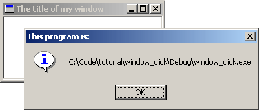

Example: window_click
 Alright, we've got a window, but it doesn't do anything except whatDefWindowProc()
allows it to, like be sized, maximised, etc... Not really all that exciting.
In the next section I am going to show you how to modify what you already have to do somehting new. This way I can just tell you "Handle this message, and do this in it..." and you will know what I mean and be able to do so without seeing an entire example. That's the hope anyway, so pay attention :P
Okay for starters take the example code for the last window we worked on and make sure it compiles and runs as expected. Then you can either keep working on it for the next little bit or copy it to a new project to modify.
We're going to add the capability to show the user what the name of our program is
when they click on our window. Not very exciting, it's basically to get the
hang of handling messages. Lets look at what we have in our WndProc():
LRESULT CALLBACK WndProc(HWND hwnd, UINT msg, WPARAM wParam, LPARAM lParam)
{
switch(msg)
{
case WM_CLOSE:
DestroyWindow(hwnd);
break;
case WM_DESTROY:
PostQuitMessage(0);
break;
default:
return DefWindowProc(hwnd, msg, wParam, lParam);
}
return 0;
}
If we want to handle mouse clicks, we need to add a WM_LBUTTONDOWN handler
(or WM_RBUTTONDOWN, WM_MBUTTONDOWN, for right and middle clicks respectively).
If I or someone else refers to handling a message they mean to add it into the WndProc()
of your window class as follows:
LRESULT CALLBACK WndProc(HWND hwnd, UINT msg, WPARAM wParam, LPARAM lParam)
{
switch(msg)
{
case WM_LBUTTONDOWN: // <-
// <- we just added this stuff
break; // <-
case WM_CLOSE:
DestroyWindow(hwnd);
break;
case WM_DESTROY:
PostQuitMessage(0);
break;
default:
return DefWindowProc(hwnd, msg, wParam, lParam);
}
return 0;
}
The order in which you handle your messages rarely matters. Just make sure
you've got your break; after each one. As you can see we added another case
into our switch(). Now we want something to happen when we get to this part of
our program.
First I will present the code we want to add (that will show the user the filename of our program) and then I will integrate it into our program. Later on I will probably just show you the code and let you integrate it into your program. This is of course better for me as I don't have to type as much and it's better for you because you will be able to add the code into ANY program and not just the ones I present. If you aren't sure how to do it, look at the example zip file included with the section.
GetModuleFileName(hInstance, szFileName, MAX_PATH); MessageBox(hwnd, szFileName, "This program is:", MB_OK | MB_ICONINFORMATION);Now this code does not stand on it's own, it can't just be slapped into our code any old place. We specifically want it to run when the user clicks the mouse button so this is how I would merge this small bit of code into our skeleton program:
LRESULT CALLBACK WndProc(HWND hwnd, UINT msg, WPARAM wParam, LPARAM lParam)
{
switch(msg)
{
case WM_LBUTTONDOWN:
// BEGIN NEW CODE
{
char szFileName[MAX_PATH];
HINSTANCE hInstance = GetModuleHandle(NULL);
GetModuleFileName(hInstance, szFileName, MAX_PATH);
MessageBox(hwnd, szFileName, "This program is:", MB_OK | MB_ICONINFORMATION);
}
// END NEW CODE
break;
case WM_CLOSE:
DestroyWindow(hwnd);
break;
case WM_DESTROY:
PostQuitMessage(0);
break;
default:
return DefWindowProc(hwnd, msg, wParam, lParam);
}
return 0;
}
Note the new set of curly braces {} . These are required when declaring variables inside
a switch() statement. This should be basic C knowledge but I thought I should
point it out anyway for those of you doing things the hard way.
So if you've added in that code, compile it now. If it works, click on the window and you should see a box with the name of the .exe pop up.
You'll notice we've added two variables, hInstance and szFileName.
Look up GetModuleFileName() and you will see that the first parameter is a HINSTANCE
refering to the executable module (our program, the .exe file). Where do we get such a thing?
GetModuleHandle() is the answer. The references for GetModuleHandle() indicate
that passing in NULL will return us "a handle to the file used to create the calling process", which is
exactly what we need, the HINSTANCE just mentioned. Putting all this information together
we end up with the following declaration:
HINSTANCE hInstance = GetModuleHandle(NULL);
Now on to the second parameter, again turning to our trusty reference manual, we see that it
is " a pointer to a buffer that receives the path and file name of the specified module"
and the data type is LPTSTR (or LPSTR if your references are old).
Since LPSTR is equivalent to char* we can declare an array of char's
like this:
char szFileName[MAX_PATH];
MAX_PATH is a handy macro included via <windows.h> that is defined to the maximum length
of a buffer needed to store a filename under Win32. We also pass MAX_PATH to GetModuleFileName()
so it knows the size of the buffer.
After GetModuleFileName() is called, the buffer szFileName will be
filled with a null terminated string containing the name of our .exe file. We pass this
value to MessageBox() as an easy way of displaying it to the user.
So if you've added in that code, compile it now. If it works, click on the window and you should see a box with the name of the .exe pop up.
If it doesn't work, here's the full code to the program. Compare it to what you have and see what, if any, mistakes you made.
#include <windows.h>
const char g_szClassName[] = "myWindowClass";
LRESULT CALLBACK WndProc(HWND hwnd, UINT msg, WPARAM wParam, LPARAM lParam)
{
switch(msg)
{
case WM_LBUTTONDOWN:
{
char szFileName[MAX_PATH];
HINSTANCE hInstance = GetModuleHandle(NULL);
GetModuleFileName(hInstance, szFileName, MAX_PATH);
MessageBox(hwnd, szFileName, "This program is:", MB_OK | MB_ICONINFORMATION);
}
break;
case WM_CLOSE:
DestroyWindow(hwnd);
break;
case WM_DESTROY:
PostQuitMessage(0);
break;
default:
return DefWindowProc(hwnd, msg, wParam, lParam);
}
return 0;
}
int WINAPI WinMain(HINSTANCE hInstance, HINSTANCE hPrevInstance,
LPSTR lpCmdLine, int nCmdShow)
{
WNDCLASSEX wc;
HWND hwnd;
MSG Msg;
wc.cbSize = sizeof(WNDCLASSEX);
wc.style = 0;
wc.lpfnWndProc = WndProc;
wc.cbClsExtra = 0;
wc.cbWndExtra = 0;
wc.hInstance = hInstance;
wc.hIcon = LoadIcon(NULL, IDI_APPLICATION);
wc.hCursor = LoadCursor(NULL, IDC_ARROW);
wc.hbrBackground = (HBRUSH)(COLOR_WINDOW+1);
wc.lpszMenuName = NULL;
wc.lpszClassName = g_szClassName;
wc.hIconSm = LoadIcon(NULL, IDI_APPLICATION);
if(!RegisterClassEx(&wc))
{
MessageBox(NULL, "Window Registration Failed!", "Error!",
MB_ICONEXCLAMATION | MB_OK);
return 0;
}
hwnd = CreateWindowEx(
WS_EX_CLIENTEDGE,
g_szClassName,
"The title of my window",
WS_OVERLAPPEDWINDOW,
CW_USEDEFAULT, CW_USEDEFAULT, 240, 120,
NULL, NULL, hInstance, NULL);
if(hwnd == NULL)
{
MessageBox(NULL, "Window Creation Failed!", "Error!",
MB_ICONEXCLAMATION | MB_OK);
return 0;
}
ShowWindow(hwnd, nCmdShow);
UpdateWindow(hwnd);
while(GetMessage(&Msg, NULL, 0, 0) > 0)
{
TranslateMessage(&Msg);
DispatchMessage(&Msg);
}
return Msg.wParam;
}